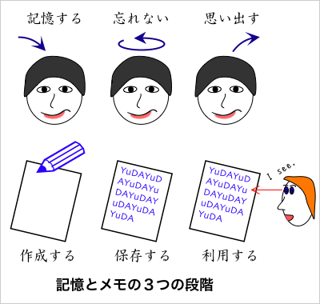
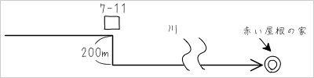
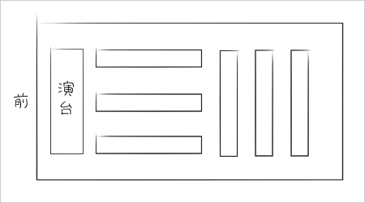
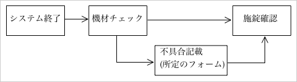
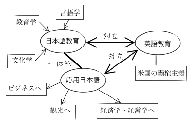
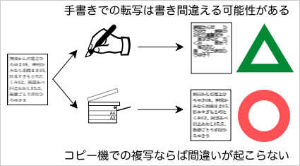
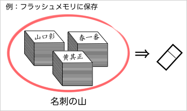
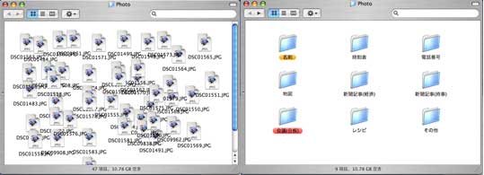
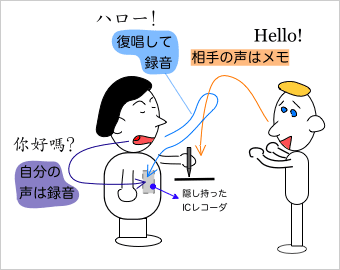

メモとは？
メモには、大きく分けて「メモ」と「伝言メモ（連絡メモ）」とがある。ここでは、前者の「メモ」について述べる（後者については【→伝言メモ】を参照）。
- メモ（広義）
-
- メモ（狭義）
→記憶を補助する目的で作成するメモ
- 伝言メモ
→情報を伝達する目的で作成するメモ
ここでは、メモを作成するときの注意点について学ぶ。
メモの目的
記憶を補助する目的で、紙などの外部のメディア（記憶装置）に保存された情報をメモという。また、メモを作成する行為を、「メモする」「メモる」という（紙の場合には、「メモをとる」ともいう）。
メモの目的は、記憶を補助することである。このため、メモは備忘録（忘れたときのための記録の意味）ともいわれる。
メモは、以下のように３つの段階に分けて考えることができる。
| １ | メモを作成する | （記憶する） |
| ２ | メモを保存する | （忘れない） |
| ３ | メモを利用する | （思い出す） |

つまり、『メモをする』とは、記憶を補助するために、メモを作成し、メモを保存し、メモを利用することであるといえる。
メモの一般的な注意点
『メモをする』とは、記憶を補助するために、メモを作成し、メモを保存し、メモを利用することである。そのため、以下の点に注意しなければならない。
- 小さなことでもメモをする
- 記憶力に特別な自信があるのでなければ、メモを活用することを考えるべきである。これは忘れないだろうと思っていても、結局忘れてしまうということもある。大きなミスをしたくないのならば、小さなことでもメモに残した方がよい。
- メモはできるだけ捨てない
- メモを捨てるということは、『忘れる』のと同じである。記憶では、覚えていようと思っても忘れてしまったり、どうしても思い出せなかったりすることがあるが、メモは捨てなければいつまでも利用することができる。メモを捨てずに整理・保存しておけば、いつか何かの役に立つかもしれない（例えば、スキャナやデジカメでデジタル画像化してパソコンに保存するのもよい）。
- メモは後から必ず読み返す
- メモは記憶を補助するものである。しかし、メモをしたこと自体を忘れてしまっては、メモの意味はないというべきである（メモの内容は忘れても構わないが、メモをしたことだけは覚えておこう）。メモをしても、一度もそれを利用しないのであれば、メモをしたことを忘れているのと同じである。メモの内容を記憶できているときにも、確認するつもりでメモを読み返す習慣をつけた方がよい。
メモの種類
メモには次のような種類がある。
- 紙とペンを使ったメモ
- パソコンを使ったメモ
- デジカメを使ったメモ
- レコーダを使ったメモ
- 情報端末を使ったメモ
紙とペンを使ったメモ
紙とペンを使ったメモは、最も基本的で、最も一般的な形のメモである。そのため、「メモ」とだけいったときには、紙とペンを使ったメモのことを指している。
紙とペンを使ったメモには次のような特徴がある。
- 紙とペンを使ったメモの利点
-
- だれにでも使用可能：読み書きができれば特別な技術は不要
- コストがかからない：不要な紙の裏など、どこにでもメモできる
- 使い方が手軽である：特別な道具を用意しなくてもすぐにメモできる
- 紙とペンを使ったメモの欠点
-
- バラバラになりやすい：厳密に管理しないと、紛れたり、行方不明になってしまう
- 情報の検索がしにくい：分類や整理に手間がかかる
- 保存の際に場所をとる：量が増えれば増えるほどスペースが必要になる
紙とペンを使ったメモでの注意点
紙とペンを使ったメモは、次の点に注意する必要がある。
ポイントだけを書き取る
たとえば、だれかが話している内容をメモするときのことを考えてみよう。話すスピードと同じスピードでメモをすることは、特別な訓練を受けた者でなければ困難だろう。また、急いで書いて乱れた文字は、あとで判読不可能だったり、誤読の原因にもなる。
だれかが話している内容をメモするときなど、スピードが求められるメモでは、ポイントだけを書き取るようにする。箇条書きを利用するのもよいだろう。
もともとの話
This text will be replaced
今日、お話したいのは、まず、大きな全体をそのまま対象にするのではなく、小さな問題に、個別の問題に分けてみるということです。大きな問題を大きなまま取り扱うのは大変ですが、小さな問題に分けてみることで、問題が考えやすくなるものです。全体の大きな問題を個別の小さな問題に分けてみることができたら、次は、個別の問題の間の関係を考えてみます。全体を分けてみたけれども、バラバラになっただけというのでは困ります。個別の問題の間の関係を整理しておかなければ、全体に戻って考えることができなくなります。個別の問題の関係が整理できていれば、最後は、個別の問題を詳しく分析して解決法を探っていけばよいでしょう。そうすれば、全体の問題、大きな問題に対して、よい見通しを持つことができるはずです。
文章でメモをした例
まず、全体を個別の問題に分けてみる（考えやすい）。次に、個別の問題の間の関係を整理する（全体に戻れる）。最後に、それぞれの問題を詳しく分析する（全体が見通せる）。
箇条書きでメモをした例
- 全体を個別の問題に分割（＝考えやすい）
- 個別の問題の関係を整理（＝全体に戻れる）
- 個別の問題を詳しく分析（＝全体が見通せる）
イラストやチャートを活用する
イラストやチャートを活用すると、わかりやすく利用しやすいメモを作ることができる。
文字でメモをした例(1)
直進→7-11の角を右→200先の角を左→川を越えて直進→目的地（※赤い屋根の家）
イラストを使った例(1)

文字でメモをした例(2)
教室の前方部分には演台に対して直角に長机を３列配置。後方部分には演台と並行に長机を３列配置。
イラストを使った例(2)

チャートを書く場合、プログラムや工程の表示で利用されるフローチャート（流れ図）のように、正確に記述する必要はない。おおよその流れや関係がわかる程度でも、メモでは十分に役に立つからである。
また、イラストやチャートは、メモをする内容が複雑になるほど効率的な手段となる。
文字でメモをした例(1)
開始→システム終了→機材チェック（不具合がある場合は所定のフォームに記載する）→施錠確認→終了
チャートを使った例(1)

文字でメモをした例(2)
日本語教育は、言語学、教育学、文化学の研究成果を参考にし、応用日本語は、研究成果をビジネス、観光、経済学・経営学へ応用する。現在、日本語教育と応用日本語とは一体的である。また、日本語教育も応用日本語も、米国の覇権主義を背景にした英語教育とは対立する関係にある。
チャートを使った例(2)

日付や場所・場面を記しておく
紙とペンを使ったメモを保存するときには、あとから利用しやすいように分類・整理しておくべきである。メモをきちんと分類・整理しておけば、メモが紛れたり、行方不明になったりすることも防ぐことができる。
メモを分類・整理するためには、分類の基準となる情報が必要である。メモをするときに、日付や場所・場面を書き添えておけば、メモを分類するときの基準になり、分類・整理の手間を少なくすることができる。
メモはできるだけ書き写さない
メモを複製したり、複数のメモをひとつにまとめる必要があるときはコピー機を使うべきである。別の紙に手書きで書き写したりするのはミスが起こりやすいのでできるだけ避けるべきである。また、パソコンに入力してデータをデジタル化するときにも、同時にデジカメやスキャナで画像化しておくのがよいだろう。

パソコンを使ったメモ
どんな職場でも、いわゆる「ＩＴ化」が進み、パソコンがなければ日常業務を行なうことができなくなっている。日常業務で、資料の作成などはパソコンを使って行なうのがふつうであり、調べ物などのメモもパソコンで作成するのが便利である。
現在では、ほとんどの社員・職員に、オフィスで一人一台のパソコンが貸与されている。デスクワークでは、パソコンを使ってメモを作成すればよい。
また、隣の席の人であっても、（紙の伝言メモではなく）電子メールやインスタント・メッセージで伝言をするようになっている場合もある（出先でも簡単に情報を得ることができるため）。【伝言メモについては → 伝言メモ を参照】
パソコンを使ったメモには次のような特徴がある。
- パソコンを使ったメモの利点
-
- 様々なツール(アプリケーション)が使える
- 検索機能が使える（整理する必要がない）
- 分量が増えても保管する場所をとらない
- ウェブサイトの情報を手軽に保存できる
- パソコンを使ったメモの欠点
-
- 最低限のスキルが必要（だれでも使えるわけではない）
- バックアップが必要（大量のデータを失う危険性あり）
- パソコンやソフトウェアが必要（利用に費用がかかる）
デジカメを使ったメモ

デジタルカメラや携帯電話の撮影機能も、メモのために使うことができる。デジカメでは、掲示板、案内板、看板、時刻表、地図、新聞や雑誌で気になった記事などを撮影してデジタル画像化することで、手軽に情報を保存することができる（ただし、書店などで書籍の内容を撮影するのは犯罪なのでやめること）。また、かさばりやすい名刺もデジタル画像化しておけば場所をとらずに保存できる。
デジカメで撮影した画像は、パソコンに取り込んで保存・管理することになる。その際、画像形式では検索機能が使いにくいので、内容を示すファイル名をつけたり（たとえば、「竹南時刻表.jpg」など）、フォルダに分類して整理する（たとえば、日付や種類ごとに別々のフォルダに入れる）などの工夫が必要になる。

ファイルを保存するだけ(左)ではなく、種類別にフォルダに保存する(右)
レコーダを使ったメモ
ＩＣレコーダや携帯電話の録音機能も、メモのために使うことができる。
たとえば、思い浮かんだアイディアなどをとりあえずレコーダに音声で録音しておき、後から文書の形に整理するといった使い方がある。
音声でのメモは、一覧表示ができないという欠点がある。これは、検索が難しく、情報の確認（再生）に時間がかかるということである。
レコーダを使ったメモは、話の内容をできるだけ実際の通りに記録する必要があるときに便利である。たとえば、他の人（たち）との話し合いをメモするといった場合である。
話し合いのメモ
相手との話をレコーダで（堂々と）録音するときは、相手の了解を得なければならない。しかし、会話を録音すること（会話を録音したいと申し出ること）自体が相手に警戒感を与えることもあるので、場合によっては相手に隠れて録音するケースも考えられる。

ペン型のボイスレコーダ（デジタルボイスペン：一見ボールペンに見えるが、実はＩＣレコーダというもの【参考：DVP-1000、DVP-2000】）などもあるが、あまり実用的ではない（一般のＩＣレコーダに比べて性能が劣る）。相手に隠れて録音したいときには、ＩＣレコーダを服のポケットや鞄に入れておけばよい。また、相手の発言を（相手に無断で）録音することが気にかかるようならば、マイクの指向性を利用して自分の発言のみをＩＣレコーダで録音し、相手の発言は紙にメモをするといった方法もある。重要な部分については、相手の発言を復唱することでＩＣレコーダに記録できる。
情報端末を使ったメモ
個人が携帯して用いる情報管理用の小型電子機器を、ＰＤＡ(Personal Digital Assistant)という（1980年代には類似の製品が「電子手帳」と呼ばれたが、この語は現在は使わない）。
ＰＤＡでは、メモ機能（手書き文字の認識も可能）の他に、個人情報の管理やウェブ・電子メールの利用、音声通話、マルチメディアの再生などができる。もともとはアップルコンピュータが提唱してNewtonとして製品化したものだが、Palm ComputingのPalm、シャープのZaurus、Windowsを搭載したPocket PCなどの機種がある。なお、日本では、高機能を必要とする用途では小型のノートパソコンが、簡単な機能で済むときには携帯電話が利用される傾向にあり、普及は進んでいない。